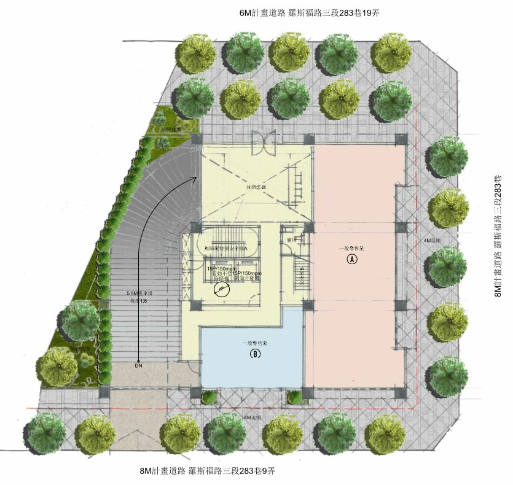
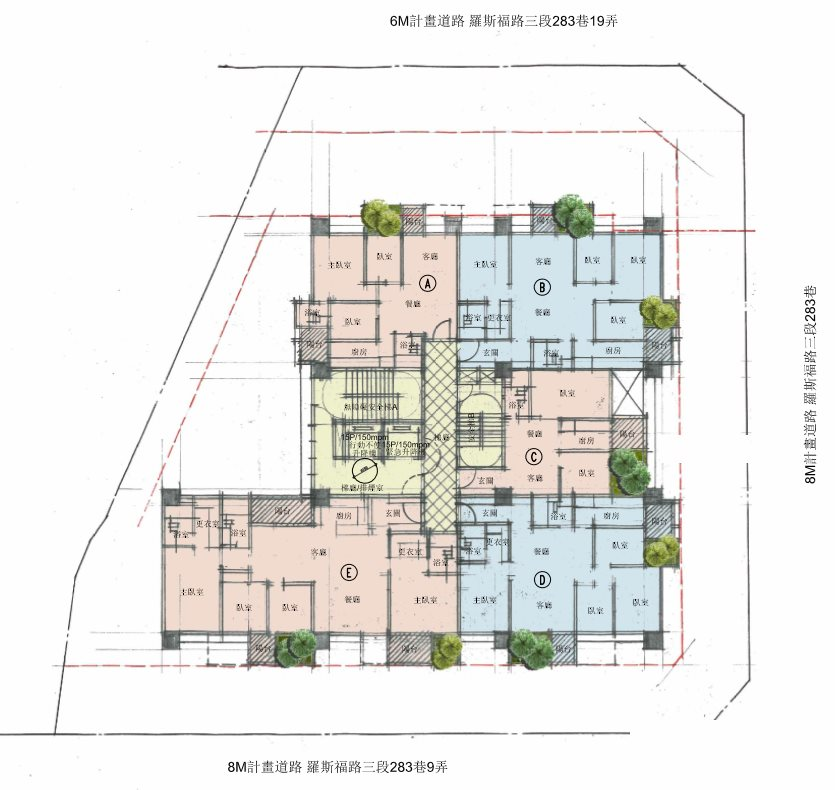
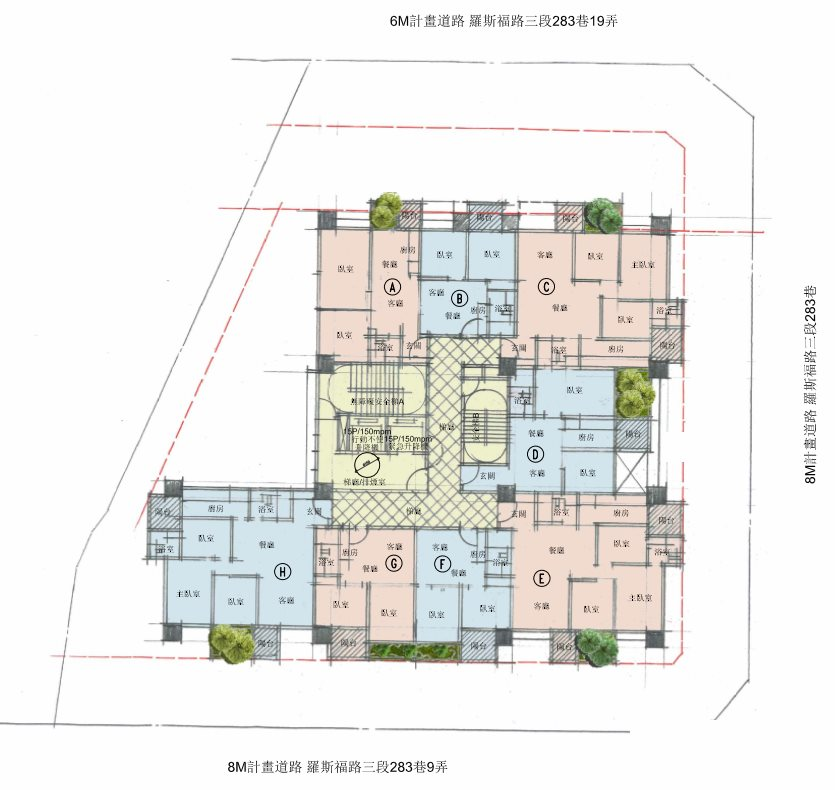
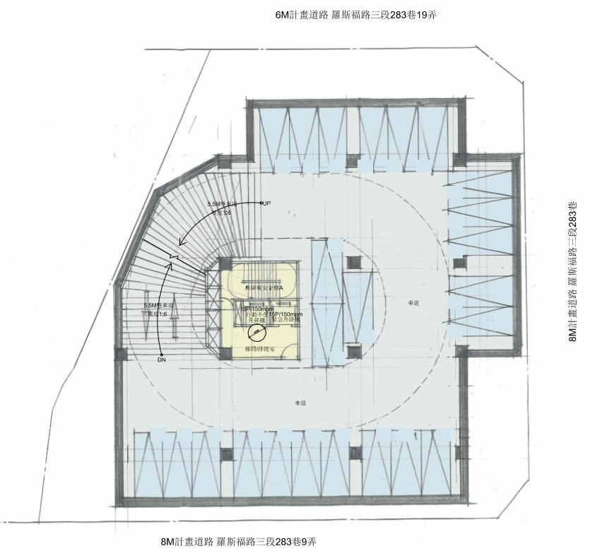

溫州公園旁·50年老屋華麗轉身
攜手 32 戶鄰居，
這座承載大家 50 年回憶的四層樓社區，預計由 32 戶地主攜手吉美建設，共同打造為地上 14 層、地下 4 層的全新鋼筋混凝土（RC）耐震電梯大樓。讓長輩輕鬆上下樓，為家人換上一座安全、舒適的現代美學家園。
開啟改建之前，為您把關的【三大安心承諾】
歡迎預約專人說明
您的分回明細、補貼金額，都會由專人為您說明，家人可以一起來。
基地與現況
範圍是溫州公園北側的 5 筆土地、4 棟公寓
4 棟建物都在民國 63 年 2 月 15 日以前取得使用執照，直接適用防災型都更獎勵。
- 地號：大安區龍泉段一小段 848、849、850、851、852，合計約 421.69 坪
- 門牌：羅斯福路三段 283 巷 11、13、15、17 號；283 巷 9 弄 1、3 號；283 巷 19 弄 1、3 號
- 現況：4 棟四層樓，民國 56 至 62 年取得使用執照，共 32 戶，都沒有電梯
- 使用分區：第三種住宅區
- 三面臨路，南面正對溫州公園
未來的大樓
預計地上 14 層、地下 4 層的電梯大樓
實際樓層與設計，以政府核准的建造執照為準。契約第 3 條第 2 項
- 可蓋的總面積，是現在法定可蓋面積的 2 倍（加上都更獎勵、防災型都更獎勵與容積移轉）
- 一樓：店面與大廳
- 二樓以上：住宅
- 地下室：停車場
- 規劃申請耐震設計標章、綠建築與智慧建築認證、無障礙設計



平面圖為初步設計示意。兩種坪型配置只是示例，實際戶別與各戶面積，會依住戶需求再調整。
未來新大樓的「建材品質」與「保固服務」如何保障？
完全比照公開銷售的建材規格，享完整結構保固！
- 對標銷售戶規格：本案位處大安區優質地段，建材與設備完全比照未來公開銷售戶之合約及廣告海報建材表，地主戶與銷售戶採用相同規格，打造區域品質地標！
- 雙重安全品質把關：建材品質與效用絕不低於都更計畫標準；混凝土氯離子含量與鋼筋輻射劑量，均符合國家安全標準。
- 安心長期保固：提供結構體 15 年保固（自取得使用執照日起算）及設備 1 年保固（自交屋日起算），讓您住得既舒適又放鬆安心。
參照契約第 8 條第 1 項、第 12 條
分回怎麼算
我的房屋分回坪數是怎麼算出來的？選樓層會影響我的權益嗎？
全案 32 戶採用完全相同的公平公式，您的資產「總價值」簽約後即固定，選高樓層或大坪數由您自由決定！
1. 公平原則：全案同公式，透明無黑箱
全社區 32 戶均採用完全相同的算式計算分回面積，唯一的差別僅在於每戶原本的「土地持分大小」。
2. 樓層分工與選屋彈性
- 樓層分配：本案由地主優先由 2 樓往上連續選擇（約至 9 樓），享優質居住環境；建商則由頂樓往下分配。契約第 4 條第 2 項
- 價值固定，自由選屋：每戶分回的是一個「固定的總價值」，就像擁有固定額度的選屋點數：
- 若您喜歡景觀，選擇高樓層（單價較高），換算的坪數會稍微精緻一些。
- 若您偏好大空間，選擇低樓層（單價較親民），就能換到更大的生活坪數。
3. 分回坪數的三大來源（地主享 62% 分回比）
您分回的每一坪都有明確的法規與契約依據（以土地持分 × 225% 住三容積為基準）：
試算範例（以土地持分 10 坪為例）
若以土地持分 10 坪進行試算，經三大坪數來源計算後，約可分配 40.17 坪（以 2 樓以上均價計算；實際權狀坪數依您選擇的樓層而定），另可依原戶別選配 1 個平面車位：
| 坪數來源 | 計算方式（帶入數據） | 分回坪數 |
|---|---|---|
| A. 法定容積 | 10 坪 × 225% × 1.58 × 62% | 22.04 坪 |
| B. 都更獎勵 | 10 坪 × 225% × 1.58 × 78.85% × 62% | 17.38 坪 |
| C. 容積移轉回饋 | 317.06 坪 × 10% ×（10 坪 ÷ 421.69 坪） | 0.75 坪 |
| 合計可分配坪數 | 【A】＋【B】＋【C】 | 40.17 坪 |
算式關鍵數字白話說明
- 225%（住三法定容積率）：本案土地屬於台北市「第三種住宅區」依法可興建之基礎容積率。
- 1.58（建築係數）：將純容積換算為包含陽台、梯廳及公設等完整「房屋權狀登記面積」之換算倍率。
- 62%（地主分回比例）：本案地主享有高達 62% 的坪數分回比例（建商分回 38%）。
- 78.85%（都更總獎勵）：團隊全力爭取之「都更獎勵＋防災型都更獎勵」預估比例，實際依政府核定。
- 10%（容移無償回饋）：建商自行出資購買公設保留地移入之容積，特別額外提撥 10% 無償回饋給全體地主，依各戶土地持分比例分配。
（註：本範例為方便理解之整數試算，實際分回坪數以各戶土地謄本精確持分及政府最後核定之都更事業計畫為準）
哪些數字要看政府核准：A 依法定容積計算；B 依都更與防災型都更獎勵的核准值；C 依容積移轉是否完成。實際坪數以未來核定的獎勵值及規劃為準。
備註：選屋時實際坪數與應分坪數若有微幅差額，以不超過 10% 為原則，於分屋時依訂價互相找補。參照契約第 4 條第 5 項。
您的分配明細
請見您的合建契約附件一「分配試算」。歡迎預約專人說明。
一樓店面
原一樓戶優先分回一樓店面，並有保底面積
適用對象：283 巷 11、13、15、17 號及 283 巷 9 弄 1、3 號的一樓所有權人。
- 優先分回原位次、原方向的店面。
- 保底面積：原一樓面積占原全部一樓面積的比例，乘以更新後一樓的面積。
- 有一樓戶放棄一樓面積時，其他一樓戶可以協調取得該部分的權利。
- 分完一樓店面後，剩餘面積乘以 1.2 倍，換到 2 樓以上。契約第 4 條第 2 項第 2 款
283 巷 19 弄 1、3 號一樓：依地主分配範圍「上一層樓」的平均單價，核算分得的價值。契約第 4 條第 2 項第 2 款
一樓店面怎麼切分，會在確認各一樓戶的需求後再規劃。
車位
車位該怎麼選配？選不選車位會影響我的房屋坪數嗎？
完全不影響，請您放心！本案的「房屋價值」與「車位價值」是各自獨立計算的，因此不論您是否選配車位，都絕對不會影響您房屋原本可分回的坪數與價值。
為了確保社區全體 32 戶鄰居都能平等享有良好的停車空間，本案規劃以原戶別為基準，每戶保障最多選配 1 個平面車位（若未來房屋有分戶規劃，選配資格仍以原 32 戶為計算基準）。
在車位位置的選擇上，我們會先協助地主們進行和諧溝通與協商；若遇到心儀位置重疊時，再透過公開公正的抽籤方式確定，過程絕對透明，讓大家選得安心又開心！參照契約第 4 條第 2 項第 3 款

搬遷與補貼
改建期間的「搬家」與「租金補貼」怎麼安排？
團隊提供完整安居補貼與清運協助，讓您輕鬆搬遷、無後顧之憂！
1. 搬家無壓力：提早預告、清運免煩惱
- 時間充裕提早預告：雖然合約約定點交期為通知後 3 個月內，但團隊實務上會於拆遷半年前提早預告進度，讓您與家人有充裕時間安排新居或租約。
- 舊屋清運免費處理：搬家時您只需帶走珍貴物品與個人所需；其餘帶不走的大型舊傢俱或廢棄物，均由團隊免費協助清運與拆除，費用全由建商負擔，不用辛苦清空！點交後留下的物品視為您已放棄，請務必先帶走重要物品。
2. 雙重安居補貼：搬家有津貼，月月有租金
- 搬遷安心津貼：每戶提供一次性 5 萬元搬遷補助，補貼您搬家與整理費用。
- 每月安居租金補貼：自騰空點交完成日起，至新家完工通知交屋為止，每月定額補助，依原建物權狀坪數計算：
- 一樓店面／住家：每坪每月 1,900 元～2,000 元（依門牌位置區分，見下表）
- 二樓以上：每坪每月 1,000 元（例如：權狀 30 坪，每月即可固定領取 3 萬元補貼！）
| 位置 | 每坪每月 |
|---|---|
| 283 巷 11、13、15、17 號及 9 弄 1、3 號一樓 | 2,000 元 |
| 283 巷 19 弄 1、3 號一樓 | 1,900 元 |
| 二樓以上 | 1,000 元 |
3. 自動匯款，精準到位
租金補貼於每月月初定期匯入您指定的銀行帳戶；若點交或交屋當月未滿一整個月，也會精確按實際天數計算補貼金額，保障您的生活資金流暢。
參照契約第 3 條第 4 項、第 4 條第 7 項、第 10 條第 6 項
沒有產權的增建部分怎麼補貼
一樓平台、庭院、陽台、從一樓室內進入的地下室、頂樓增建（需有屋頂及牆面），依實測坪數，每坪一次補貼 5 萬元。
從公用樓梯進入的地下室空間不列入補貼。
信託與保障
資產安全與權益保障：不動產與資金雙重信託
為保障地主資產安全，本案設置嚴密的金融防護機制與專用印章管理規範，讓您安心參與改建：
❶ 不動產與資金「雙重信託」，由銀行與建經公司共同把關
- 建商不得抵押您的土地：合約明訂，建商絕不能拿地主的土地去辦理融資貸款或設定抵押權，確保您的資產產權獨立安全。
- 辦理時間：都市更新事業計畫核定後、拆屋前，依通知與受託銀行及建經公司完成信託簽約，專人全程協助。
- 專款專用與工程查核：興建資金與預收款一律存入銀行獨立信託專戶，由銀行與建築經理公司（建經）進行財務稽核，嚴格依據工程實質進度查核後始予撥款，絕不挪作他用。
- 安心續建機制與費用全包：信託合約內建「未完成工程續建機制」，確保建案能順利完成；相關信託管理費用全數由建商負擔，地主不需額外支付（個人貸款或轉貸之費用依約由地主負擔）。
參照契約第 6 條第 1、2、4、5、6 項
流程與作業
從簽約到煥然一新：四大階段，陪您穩健走向新家
本案從簽約推動到順利交屋，團隊會全程為您把關。您只需在關鍵節點配合簡單的行政手續，其餘繁雜的政府審議與施工品質均由吉美專業團隊為您服務！
- 階段一：攜手立約與精心規劃現在進行中
- 展現誠意爭取獎勵：團隊將全力於 2029 年 3 月 28 日前完成都市更新事業計畫送件，為全體地主爭取「防災型都更獎勵」容積！依合約約定，事業計畫需於此日期前送件；若未能如期送件且雙方未協議展期，合建契約將自動失效，因此團隊會全力把握時程。
- 打造理想家園：舉辦設計說明會與公聽會，並由專業估價單位計算各樓層單價，進行公開透明的意願調查與選屋作業。
- 階段二：政府審議與產權信託資產安全有保障
- 審議公告：事業計畫送主管機關審議核定並依法公告。
- 信託安全防護網：都更核定後、拆屋前，由受託銀行與建經公司辦理信託簽約，確保產權與建案資金專款專用。
- 階段三：安心搬遷與精緻施工月月租金補貼
- 提早通知好準備：取得建造執照後申報開工，團隊會提早預告點交時間，並發放 5 萬元搬遷津貼與每月定額租金補貼（自動匯入指定帳戶）。
- 舊屋免煩惱：提供免費大型廢棄物清運，讓您無後顧之憂輕鬆搬遷。
- 階段四：品質驗收與歡喜交屋開啟美好新生活
- 嚴謹驗收品質把關：取得使用執照後進行面積微調找補，團隊將安排專人陪同您進行會同驗屋，確保各項細節改善完善。
- 歡喜領鑰匙：完成驗收手續並點交鑰匙，租金補貼發放至通知交屋日止；並享有結構體 15 年（自使用執照核發日起算）、設備 1 年（自交屋日起算）的長期保固承諾！
專人服務與權益小提醒：依合約第 11 條規範，收到通知後需於 15 天內完成會同驗屋（超過 15 天未會勘將視同完成交屋）。請您完全放心，團隊專人會主動提前與您聯繫並排定行程，確保您的驗屋權益獲得最完善的照顧！
參照契約第 3 條、第 4 條、第 6 條、第 10 條、第 11 條、第 12 條
稅費
改建過程中，相關的「稅捐與規費」該如何負擔？
建商全額負擔大筆工程與信託費用，並由團隊主動為您申請政府都更稅費減免！
重建期間的稅費安排遵循「權益對等、公開透明」原則，絕無隱藏費用：
1. 【建商全額負擔】（您不需支付任何費用）
- 工程與設施規費：新大樓的瓦斯內外管工程費、社區法定公共基金（提撥給未來管委會），以及整體信託管理費用，均由建商全額吸收負擔。
2. 【享政府都更減免＋建商主動代申辦】
- 房屋稅、地價稅、土地增值稅及契稅：都市更新依法享有稅捐減免優惠！合約明確約定，上述稅捐依法可申請之減免，均由團隊免費代為向政府機關提出申辦，幫您把關省荷包。減免後仍需繳納的土地增值稅（土地過戶前）與契稅，依約由地主負擔。
- 興建期負擔：舊屋拆除後的房屋稅停止課徵；過戶前的地價稅由地主負擔；土地過戶或使照取得後的房屋稅與地價稅，則依各自分得房地比例各自負擔。
3. 【個人資產與產權登記規費】
- 產權登記與管理費：地政規費、代書費、印花稅、水電費及未來社區管理費等，由雙方按分回房屋面積比例各自負擔。
- 個人財產稅務：個人專屬之遺產稅、贈與稅、繼承相關稅務，以及依營業稅法進行房地互易時開立憑證之營業稅，由地主自行負擔。
參照契約第 6 條第 6 項、第 7 條
常見問題
大家最常問的 14 個問題
改建過程中，地主需要自己出錢嗎？
興建費用完全不用掏錢！營造成本由建商全額負擔。
蓋新房子最昂貴的「建築規劃、設計與工程營造費用」，全數由吉美建設負責負擔，地主完全不需要掏錢出興建費。
主要有以下幾類屬於「個人資產或選擇性項目」會由地主自行處理，每一筆明細均公開透明：
- 個人專屬稅費與登記規費：如產權登記規費、代書費，以及依法應由地主負擔之個人稅捐（政府都更稅費減免優惠，均由建商免費代為申辦）。
- 自願選大坪數之找補款：若您選屋時實際選擇的坪數超過應分回坪數（以不超過 10% 為原則），才需就多選的坪數支付差額找補款；反之，若選擇的坪數少於應分坪數，則由建商找補差額給您。
- 個人客變追加費用：若您主動提出室內隔間或配備的客製化變更（客變），僅針對您要求的追加工程部分辦理找補。
- 交屋後的社區費用：新大樓的管理基金、管理費及水電費，依分得房屋比例分擔，與一般新成屋相同。
參照契約第 3 條第 2 項、第 4 條第 5 項、第 7 條、第 8 條第 2 項
物價上漲，我分回的會變少嗎？
不會。從簽約到交屋，雙方都不能以物價、工資、建材漲跌要求改分配比例，建商也不能以此延誤交屋；政府法令與不可抗力除外。契約第 4 條第 9 項
為什麼高樓層是建商分？
分配是看「價值」不是看樓層。您的分回價值是固定的，在地主分配範圍內（約 2 至 9 樓）選高一點的樓層，坪數就少一點；選低一點，坪數就多一點。
如果有鄰居不簽，怎麼辦？
推動都市更新是一段建立共識的過程。當鄰居對於參與合建有疑慮時，我們的原則是「主動溝通、務實協助」。
除了透過說明會釐清大家的共通問題外，針對個別住戶在搬遷、稅務或產權上的特殊困境，團隊也會提供客製化的諮詢與行政協助，以誠意與專業解答疑慮。只要能兼顧全體地主權益與計畫推進，我們願意花時間深入了解每一戶的需求，共同克服困難。
什麼時候可以搬回來？
預估工期將於建築設計定案後公布。從搬出去到通知交屋，每個月都有租金補貼。
我年紀大了，搬家怎麼辦？
每戶有 5 萬元搬遷補貼，每月另有租金補貼。搬遷時遇到的困難，歡迎和專人討論。
我的房子有貸款或抵押，可以參加嗎？
可以，完全不影響參加！實務上多數房屋都有房貸，請您放心。本案推動時會辦理「不動產信託」，建設公司會全力協助您將現有貸款轉貸至本案的信託銀行，並於申請建造執照前由團隊協助完成抵押權整理與順暢對接，讓您不需煩惱繁複的銀行手續。
相關轉貸或融資之本金、利息及規費依約由地主負擔，團隊會協助爭取良好的信託銀行條件。參照契約第 3 條第 3 項、第 6 條第 6 項。
房子還在出租中，到時候會不會來不及要租客搬走？
絕對來得及！合約上寫的是收到通知後「3 個月內點交」，但我們實務上會在拆遷前半年就先通知您。您有非常充足的時間跟租客說明與處理租約，不用擔心被時間逼著跑。如果在寫租約提醒或處理退租有任何疑問，我們團隊隨時能給您建議！契約第 10 條第 6 項
如果屋主過世，契約還有效嗎？
有效，契約效力及於繼承人。遺產稅、贈與稅及繼承問題由地主自行處理。契約第 15 條、第 7 條
分回的房子可以賣嗎？
可以。取得使用執照前要賣，需委託建商共同委任的銷售公司，銷售費用自付。契約第 10 條第 2 項
未來可以依照我的需求修改室內格局嗎？
可以的，我們提供專屬的「客戶變更（客變）」服務！每個家庭對空間的需求都不盡相同。為配合建築工程進度與施工品質，客變設有固定的受理時間區段。請您完全放心，當客變期程到達時，我們的團隊會主動聯繫並通知您，為您預留充裕的時間與家人討論規劃！
在客變期間內，您可以提出格局或建材配備的微調需求，團隊會安排專業建築師為您進行結構安全與法令評估，經雙方確認可行後，全力協助您打造最貼合生活習慣的理想家園。
所有變更項目均會開立公開透明的追加減費用明細，經您充分評估滿意並簽署客變確認單後，再於一個月內辦理款項找補，流程清晰又安心！
參照契約第 8 條第 2 項、第 4 條第 5 項
為什麼要授權建商刻印章？
都更過程中需要蓋章的政府文件非常多。為了不讓您和長輩為了一顆印章頻繁奔波，簽約後會請您授權建商代刻一枚『專用印章』。請放心，這枚印章嚴格限定僅能使用於契約列出的 12 類都更行政文件（如：建照申請、都更同意書、信託指示、產權登記、水電申請等），建商嚴禁擅自移作其他用途。若有違背授權導致地主權益受損，建商依法須負擔全部的法律與賠償責任，您的權益絕對受到保障。參照契約第 10 條第 7 項
如果我沒有配合用印或交文件，會怎樣？
改建需要全體住戶一起齊心推進。為了不影響大家的進度，若您一時太忙忘記交文件，我們會先派專人溫馨提醒，並給予充裕的補件時間（收到通知後 15 天內；若來不及，書面催告後會再給 15 天）。只有在長久未配合、嚴重影響到全體鄰居權益的極端情況下，才會有依約按日計算延遲責任的機制。專人團隊都會隨時在旁協助您處理文件，請不用太過擔心。
我的分回明細在哪裡看？
在您的合建契約附件一「分配試算」。歡迎預約專人說明。